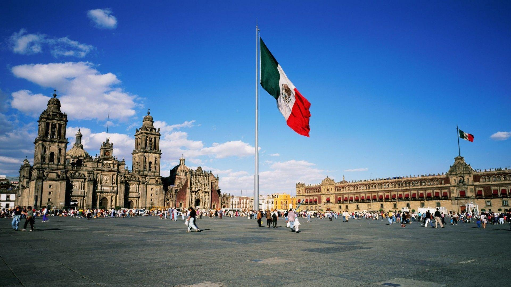
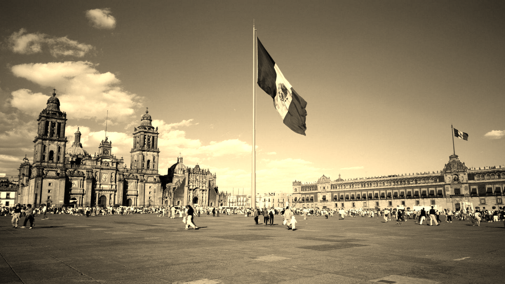

Dette prosjektet er en liten samling av Python-eksperimenter rundt bildebehandling. Fokus er på å forstå hvordan filtre fungerer, hvordan piksler blir transformert og hvordan visuelle effekter kan opprettes med kode.
Det inkluderer gråskala-konvertering, sepia-effekter, pikselering, ASCII-lignende rendering og enkle verktøy for å lese og vise bilder.
Prosjektnotater
- Bildebehandlingsarbeid ligger i samme filterflyt.
- Eksperimentene inkluderer gråskala, sepia, pikselering, blur og ASCII-rendering.
- Eksemplene nedenfor er hovedproduktene i prosjektet.

Original

Greyscale

Sepia
Pixelator

ASCII

Blur
Interessante kodesnutter
Her er noen av de mest illustrative filter-implementasjonene fra prosjektet. De viser hvordan piksler transformeres, hvordan lokale områder behandles, og hvordan visuelle effekter oppnås med ganske liten kode.
1. Gråskala: vekting av RGB-kanaler
def numpy_greyscale(image: np.ndarray) -> np.ndarray:
red = image[..., 0] * 0.21
green = image[..., 1] * 0.72
blue = image[..., 2] * 0.07
gray_image = red + green + blue
gray_image = np.stack([gray_image] * 3, axis=-1)
return gray_image.astype(np.uint8)2. Sepia: lineær fargekombinasjon
def numpy_sepia(image: np.ndarray, k: float = 1.0) -> np.ndarray:
sepia_matrix = np.array([
[0.393, 0.769, 0.189],
[0.349, 0.686, 0.168],
[0.272, 0.534, 0.131],
])
sepia_image = image @ sepia_matrix.T
sepia_image = (sepia_image * k) + image * (1 - k)
sepia_image = sepia_image.clip(0, 255)
return sepia_image.astype(np.uint8)3. Blur: gaussisk kernel over nabopiksler
def gaussian_kernel(kernel_size, sigma=1.0) -> np.ndarray:
radius = kernel_size // 2
kernel = np.zeros((kernel_size, kernel_size))
for y in range(-radius, radius + 1):
for x in range(-radius, radius + 1):
exponent = -(x**2 + y**2) / (2 * sigma**2)
kernel[y + radius, x + radius] = np.exp(exponent)
kernel /= kernel.sum()
return kernel